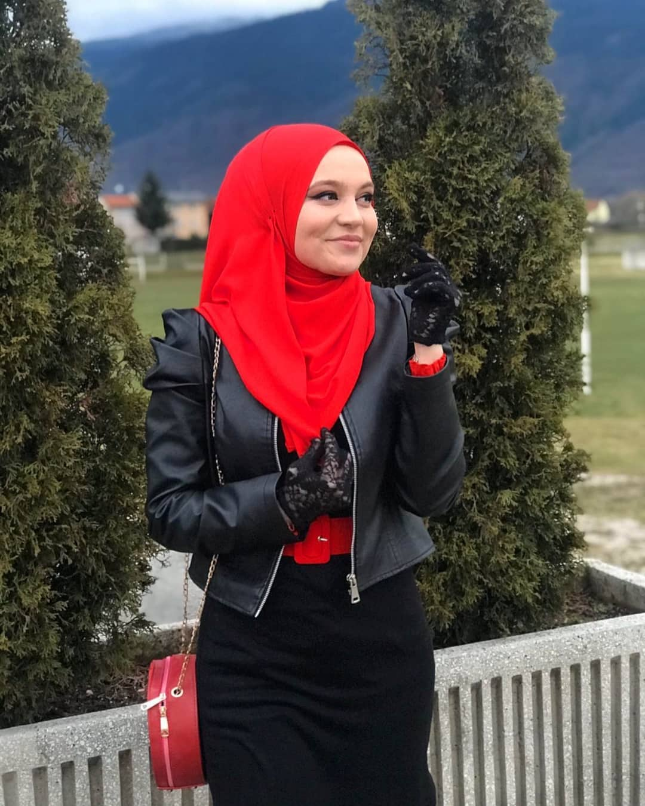
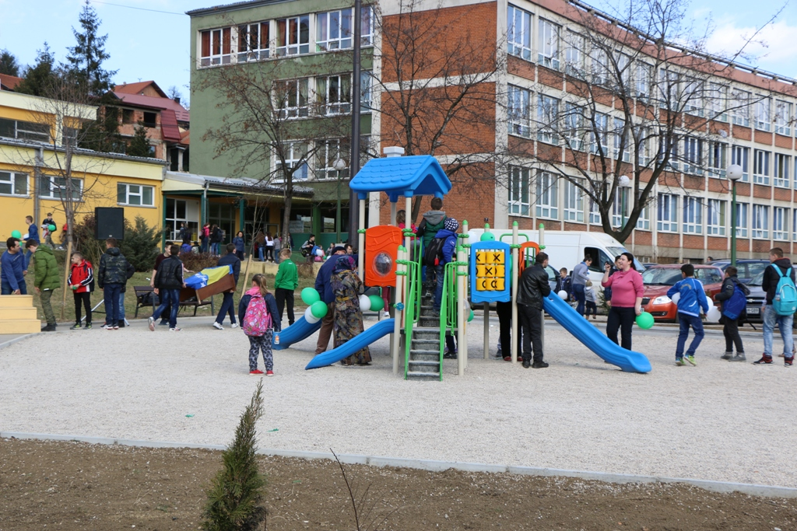
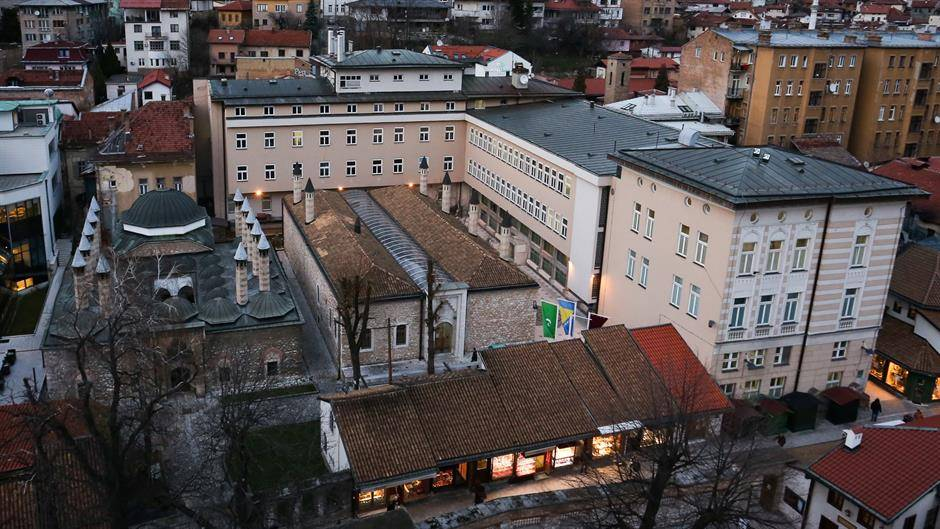
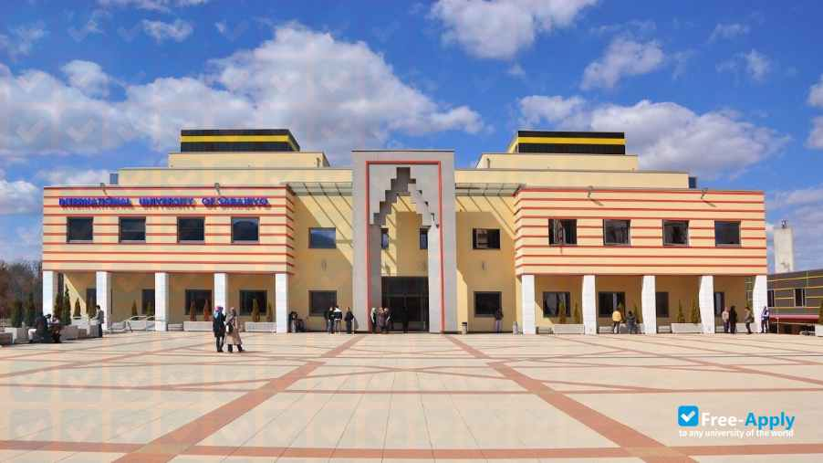

CV
Talić, Merjem, 03.05.1999.

Kakanj, Brnj 68
merjem.talic.09@gmail.com
Merjem Talic | LinkedIn
Merjem Talic | GitHub
+387 60 322 35 15
Hi, my name is Merjem Talić. I am 21 years old, and I live in Kakanj. I finished primary school at O.Š."Mula Mustafa Bašeskija" in
Kakanj. Then, when I was 14, I moved to Sarajevo. My dream was to study at Gazi Husrev-begova Medresa, for highschool. I have
spent four amazing years there. After that, I had to decide what I wanted to do with my life. Everyone knew that I was really interested
in coding and programming, so I decided to study software engineering at the International University of Sarajevo. Now, I am a third
year student, and in two years, I will become a Bachelor of Software engineering, inshaAllah!
Education
Picture of school Name of school Year  Osnovna škola "Mula Mustafa Bašeskija", Kakanj 2005-2014  Gazi Husrev-begova medresa, Sarajevo 2014-2018  International University of Sarajevo 2018-... Skills
- Programming
- Team work
- Problem Solving Skills
- Scheduling Skills
- Critical Thinking Skills
- Communication
- Organisation
- Ability to work under pressure
- Confidence
Hobbies
- Travel
- Volunteer
- Learn New Things
- Gardening
- Cook
- Draw
- Visit Local Museums
- Start a blog
- Photography
Languages
- Bosnian
- Croation
- Serbian
- English
- Turkish
- German-basic
- Arabic-basic
- Spanish-basic